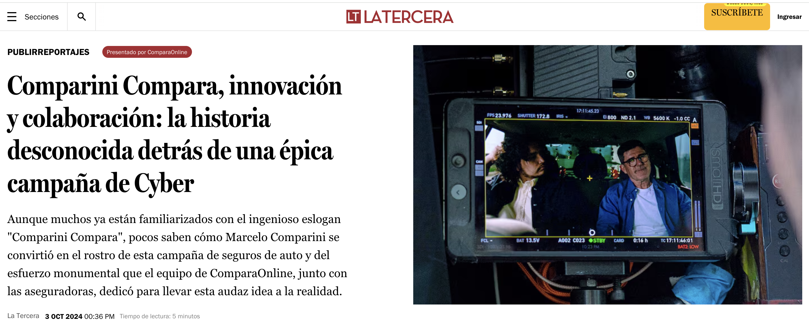
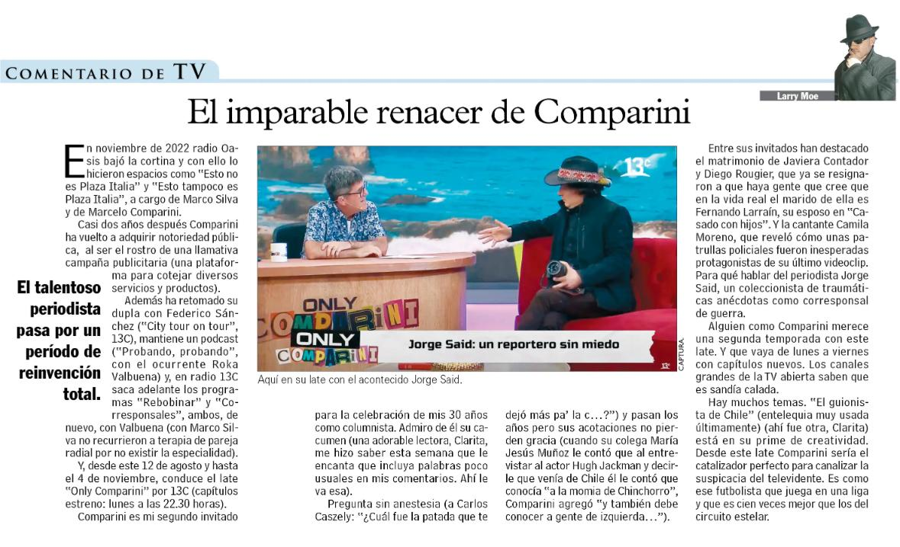
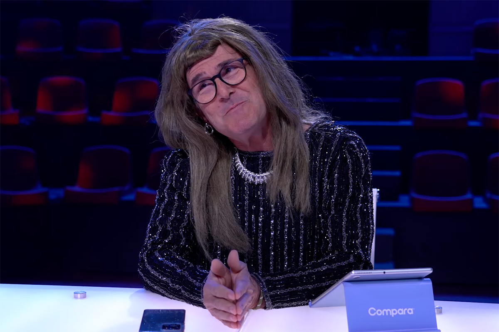

¿Habrá segunda parte?
Dicen que no son buenas, pero...
Dicen que no son buenas, pero...

Comparini-Compara está presente en todas partes, creíamos que iba a ser así, pero verlo materializado nos hizo creer aún más que lo que pensamos se puede crear de maneras grandiosas.
Luego de que saliera nuestro comercial (si no lo viste todavía, no entendemos cómo puede ser, pero aquí está) los portales de noticias se están llenando de imágenes de Comparini en sus diversas facetas.
Paréntesis aparte para decir que las publicidades son las grandes generadoras de recuerdos visuales y auditivos, o nos van a decir que no recuerdan el comercial de manjar Colun con la frase “mi mamá me quiere tooooodo esto…”
Volviendo a lo nuestro. En el periódico La Tercera, contaron como fue que Marcelo decidió ser parte de este increíble corte publicitario y como se llegó a esto. Si todo un cahuín la cosa. Esto fue lo que dijeron:
”El equipo de ComparaOnline, bajo la dirección de su CEO, Sebastián Valín, comprendió que, en un mercado saturado donde la toma de decisiones suele ser confusa para los consumidores, era necesario algo disruptivo.
La misión no era simplemente destacar entre la competencia, sino acercarse a las personas, proporcionándoles las herramientas necesarias para comparar seguros de manera efectiva y comprender las diferencias cruciales entre las ofertas.
Así surgió la idea de revivir una idea publicitaria que había sido exitosa hace más de una década, pero esta vez con una visión renovada, lista para impactar en un mercado más maduro y digitalizado.”

Creemos mucho en una frase que dijo Marcelo Comparini, cuando lo entrevistaron desde Pauta:
Conocía a ComparaOnline, por eso, cuando se me acercó el equipo y me presentaron lo que estaban planeando como campaña, la encontré muy bien pensada, entretenida y con una narrativa que va muy alineada con mi estilo, carácter, manera de ser y comunicar, así que les dije: ¡Vamos!
Además de todo esto, Comparini está muy presente en la escena. Salió una nota de Larry Moe, para quienes no lo conoces es un columnista muy famoso de acontecimientos y novedades de la cultura pop chilena. Escribió sobre su renacer. Les dejamos en fragmento a continuación porque es verdaderamente hermoso de leer.

Realmente se alinearon los astros y esta campaña es un éxito, pero ¿habrá segunda parte?
Para los fans y los haters les decimos que estén atentos, no hay planes, pero si los hubiera no se los diríamos.

Mientras tanto, seguimos pensando de qué otras formas puede aparecer Comparini en momentos importantes, cuando tienes que comparar.
Nos leemos en el próximo post, chaucito.
 Actualidad
ActualidadEl recordado programa noventero “Venga Conmigo” marcó a toda una generación en Chile. Su exitoso segmento “Corazones Service” se transformó…
 Actualidad
ActualidadHace aproximadamente 2 meses comenzamos con el cierre de lo que empezó en julio como el “Compariniverse”.
 Actualidad
ActualidadHace unos meses lanzamos Compariniverse: la primera campaña en Chile protagonizada por una celebridad completamente clonada con IA.